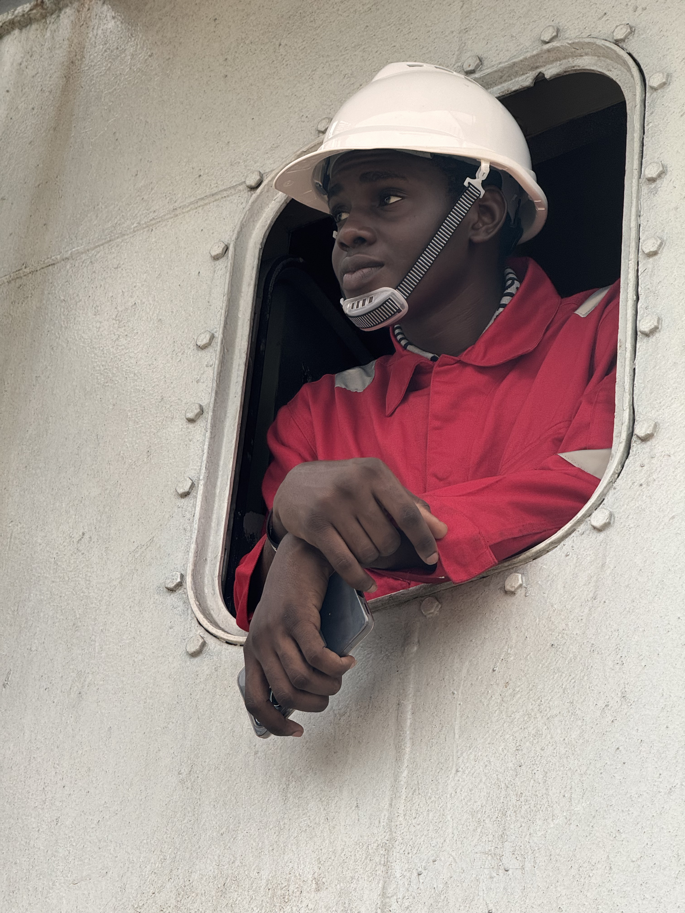

Erekholome Ikwenwosa Excel

Summary
I am a dedicated and hardworking student with a strong passion for
learning and solving real-world problems. Through internships, job
experiences, and ongoing training, I've been building practical skills at
the intersection of technology and engineering. I'm currently expanding my
expertise in Web3, software development, and mechanical innovation, with
the goal of creating impactful, real-life solutions.
Education
-
The Complete Full-Stack Web Development Bootcamp - Udemy(July 2025 -
Present)
-
B.Eng,Mechanical Engineering - Edo State University,Iyamho(2021-Present)
- WASSCE&NECO-Preston International School(2015-2021)
Work Experience
-
Mechanical Engineering Intern - SG Jones Nigeria Limited, Warri,Delta
State.
June 2023 - October 2023
-
Assisted in the servicing, diagnostics, and repairs of heavy-duty
vehicles, including engines, brake systems, and electrical faults
-
Gained hands-on experience in component replacement, engine
overhauls, and the use of diagnostic tools and welding equipment.
-
Participated in test drives and quality assurance checks to verify
post-repair vehicle performance and compliance with safety
standards.
-
Maintained detailed service records and inventory logs, and upheld
workshop safety practices including the use of PPE and adherence to
protocols.
-
Mechanical Engineer - Michharry and Company Nigeria Limited
July 2024 - October 2024
-
Carried out routine maintenance, diagnostics, and repairs on
engines, pumps, compressors, and generators.
-
Assisted in mechanical part replacements, including seals, bearings,
impellers, and gaskets.
-
Troubleshot system faults and supported servicing of AC, crane, and
sewage systems.
-
Applied safety protocols and collaborated with technicians in
hands-on engineering tasks.
-
Industrial Trainee - Ghojet Auto Services
April 2025 - Present
-
Acting as a communication bridge between the Managing Director and
staff,relaying instructions and updates.
-
Performed administrative and secretarial duties, including
recordkeeping and office coordination.
-
Managed vehicle registrations and supervised repairs and maintenance
activities.
-
Tracked and documented workshop expenses and repair costs
accurately.
Skills
-
Effective communicator with strong team coordination and administrative
support skills
-
Experienced in vehicle registration, diagnostics, repair tracking, and
workshop operations
-
Proficient in AutoCAD, SolidWorks, MATLAB, and mechanical design tools
-
Skilled in engine servicing, OBD diagnostics, multimeter use, and
welding
-
Strong problem-solving abilities with attention to detail and
safety-focused mindset
-
Excellent time management, adaptability, and experience with expense
tracking and technical reporting
Awards and Certifications
- Best Intern of the Year
- ...
Other